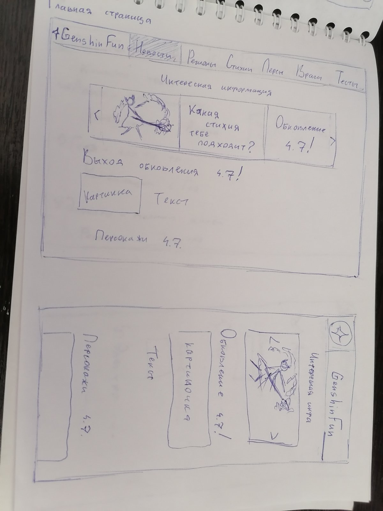
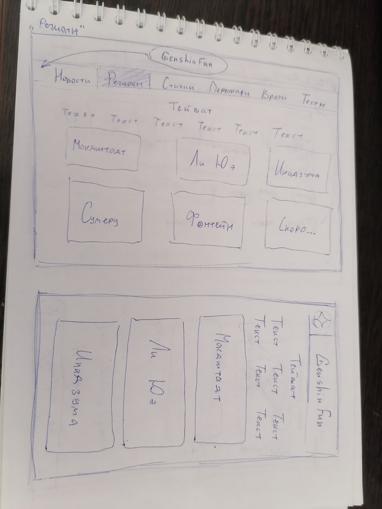
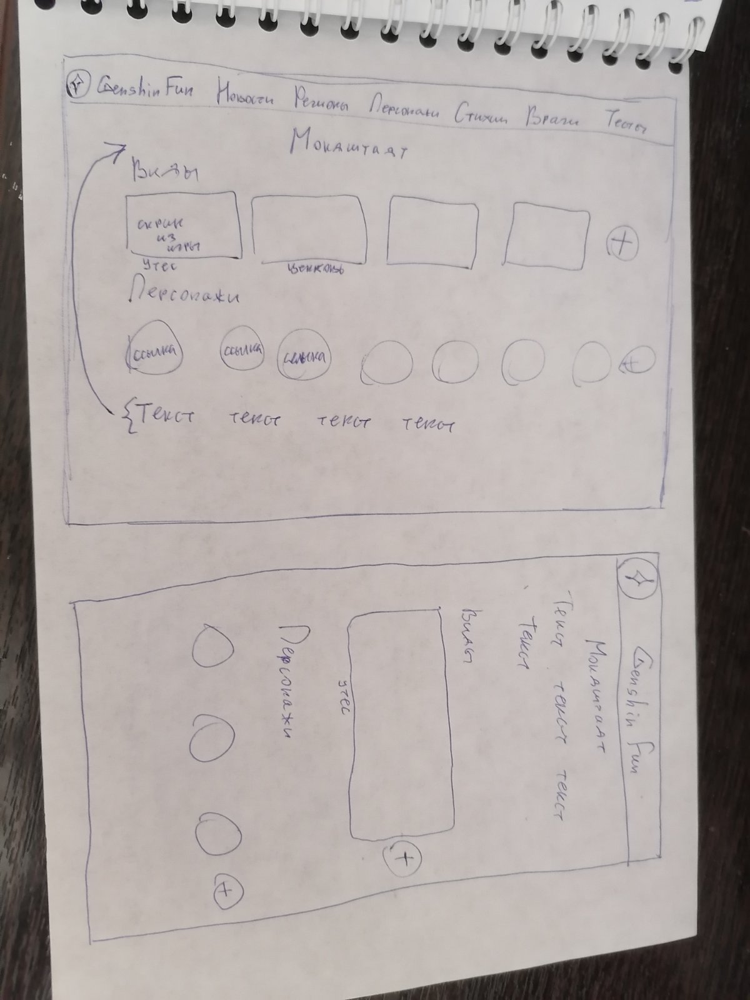
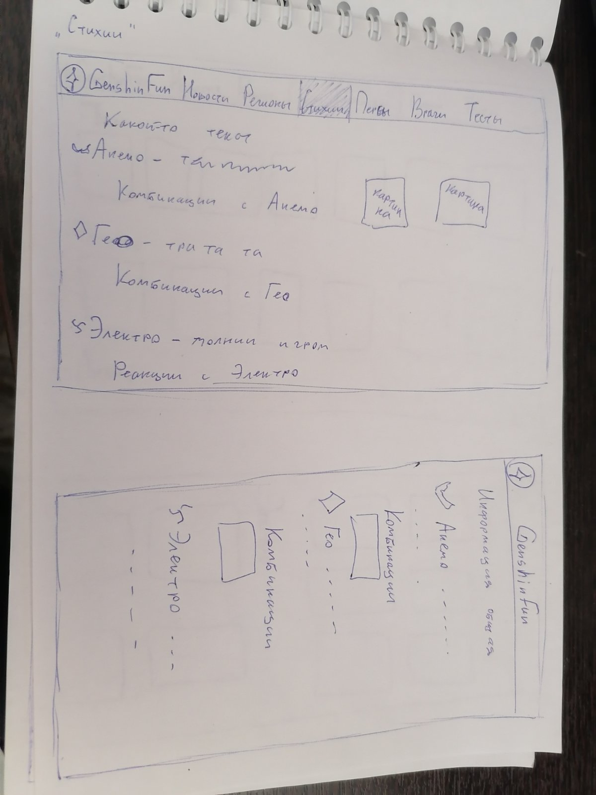
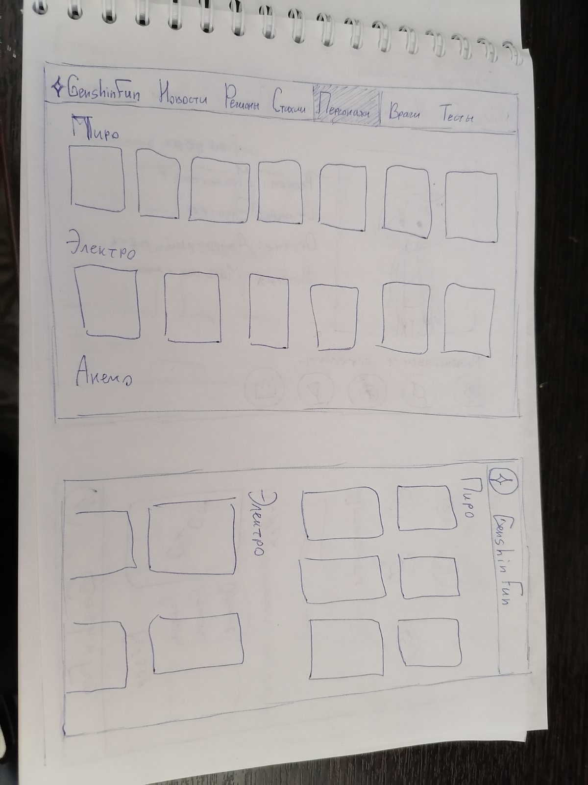
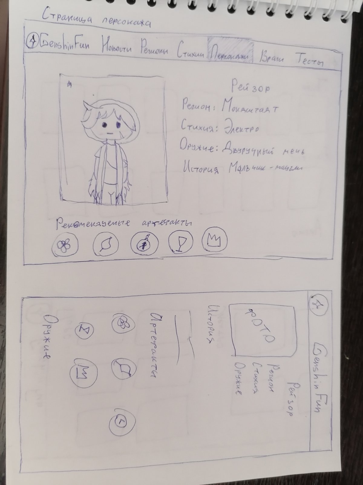
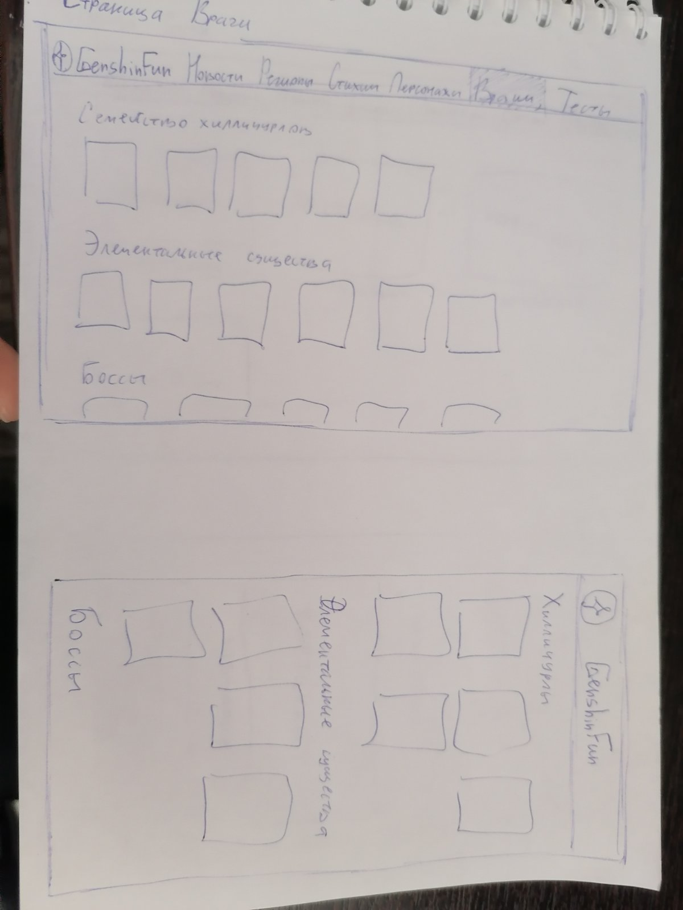
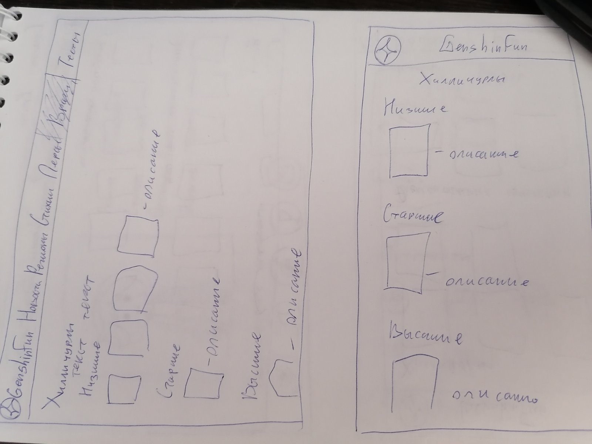
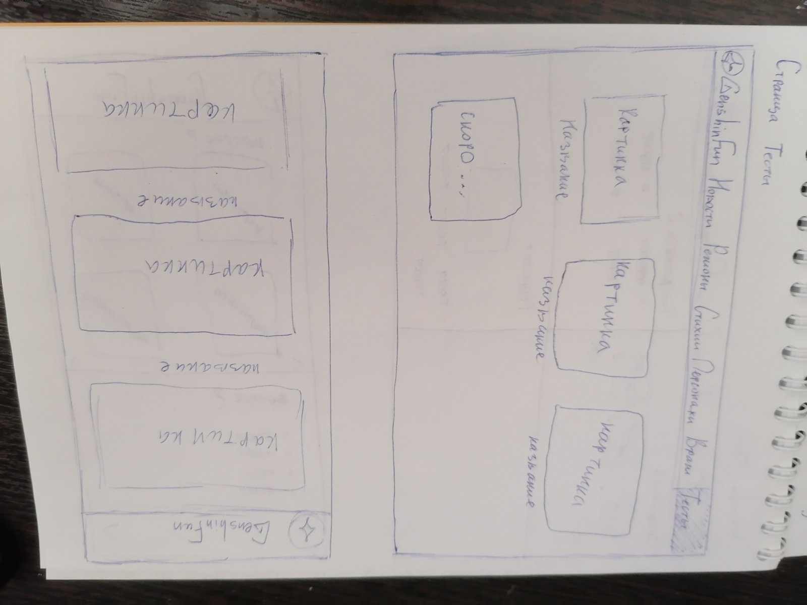
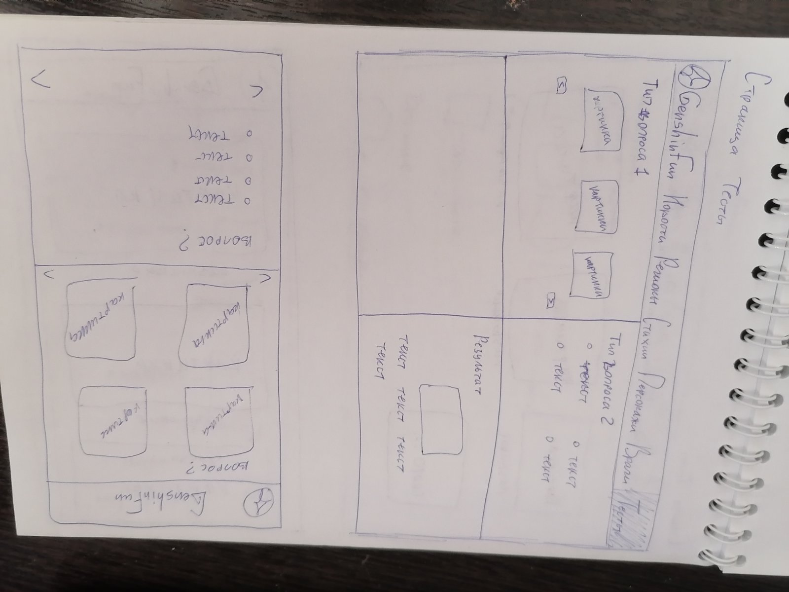

<!DOCTYPE html>
<html lang="ru" data-theme="dark"> <!--data-theme="dark"-->
<head>
	<meta charset="UTF-8">
    <meta name="viewport" content="width=device-width, initial-scale=1">
	<title>Init</title>
	<link rel="stylesheet" href="style.css">
</head>
<body>
	
</body>

</html>
<h2>Медведева Юлия Юрьевна</h2>
<h2>Название сайта: GenshinFun</h2>
<h3>Тема сайта:</h3>
<p>Сайт по игре Genshin Impact на котором есть информация об игре
    и дополнительная информация, которая будет полезна или интересная игрокам.</p>
<h2>Цель и задачи</h2> 
<h3>Цель:</h3> Помощь игрокам которые недавно скачали игру и еще плохо разбираются в механике и сюжете игры.
<h3>Задачи:</h3>
<ul>
    <li>Советы по улучшению персонажей(рекомендуемое оружие, артефакты) и по сражению с врагами</li>
    <li>Информация по основному сюжету игры</li>
    <li>Дополнительные интересные разделы, которые будут интересны новичкам и тем кто уже давно играет</li>
</ul>
<h3>Для новичков будут полезны разделы:</h3>
<ul>
    <li>"Персонажи"(информация про персонажей и их усиление)</li>
    <li>"Регионы"(основная информация про регионы и Архонтов)</li>
    <li>"Стихии"(информация про стихии и их комбинации)</li>
    <li>"Враги"(информация про врагов, которых игрок может встретить в игре, рекомендации для сражения с ними)</li>
</ul>
    
<h3>Для тех кто играет давно будут интересны разделы:</h3> 
<ul>
    <li>"Новости"(информация по выходу обновлений и о новых персонажах)</li>
    <li>"Тесты"(тесты связанные с игрой Genshin Impact, например "Тест на знание сюжета", "Тест на стихию")</li>
</ul> 
        
        
<h2>Целевая аудитория</h2>      
<p>Основная целевая аудитория сайта - это игроки 12-20 лет, преимущественно те, кто только недавно начал играть.<br>
    Для них на сайте должная содержаться краткая и понятная информация по игре(преимущественно с картинками для лучшего понимания),
    которая поможет новым игрокам разобраться в игре.<br>
    Для тех кто уже знаком с игрой будет содержаться интересная информация по обновлениям, новым персонажам, а также развлекательные тесты.
    В Genshin Impact можно играть на компьютере и телефоне, поэтому важно чтобы пользователи могли просматривать сайт с разных устройств.
</p>

<h2>Содержание сайта</h2> 
<p>В "шапке" сайта будет навигация: "Новости" "Регионы" "Стихии" "Персонажи" "Враги" "Тесты"</p>   
<h3>На главной странице(Новости):</h3>
<p>В начале страницы будет лента с картинками,
    при нажатии на картинку пользователь будет переходит на интересующую часть страницы или на другую страницу. Лента будет сдвигаться на одну картинку раз в 5-7 секунд. Далее будет содержаться информация по обновлениям и прочим новостям.
</p>



    <p>
        Информация про Тейват.
        В отдельных ссылках информация по каждому региону(краткое описание региона, скриншоты из игры, персонажи относящиеся к региону)
    </p>
    
    

<h3>На странице "Стихии":</h3>
        <p>Краткая информация о стихиях
            <ul>
                <li>1 стихия(о стихии, комбинации с ней, фото с примерами)</li>
                <li>2 стихия(о стихии, комбинации с ней, фото с примерами) и т.д.</li>
            </ul>
        </p>
    

    <h3>На странице "Персонажи":</h3>
        <p>Страница с картинками персонажей, при нажатии на картинку пользователь переходит на страницу,
            где содержится информация про персонажа(история, стихия/регион, советы по прокачке персонажа)
        </p>
    
    
    
    <h3>На странице "Враги":</h3>
        <p>Оформление как на странице персонажей(Схожие враги будут сгруппированы), на странице врага будет информация о нем,
            место где он чаще встречается, советы по борьбе с ним
        </p>
      
      
    
    <h3>На странице "Тесты":</h3>
        <p>Оформление как в предыдущем разделе. Тесты будут короткие по 10-20 вопросов. Нужно выбрать картинку или нужный ответ.
        </p>
    
    
    
        

<p>Основное оформление сайта будет в бежевых и желтых тонах, темная тема будет в синих/серо-коричневых </p>